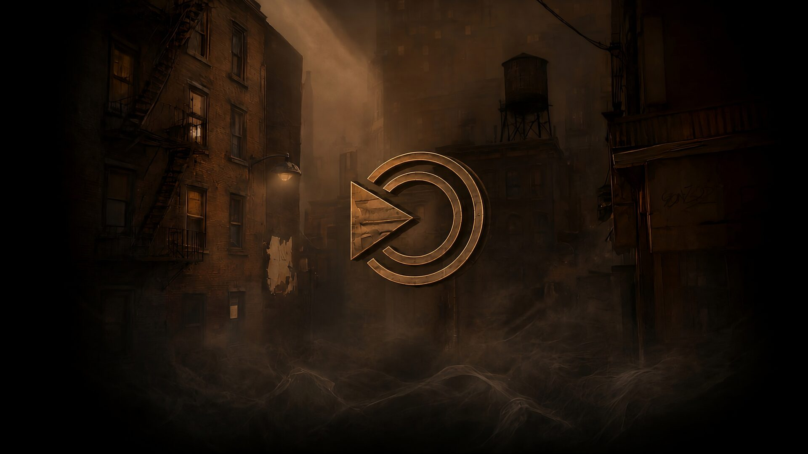

Know what runs
Clear system layers, explicit services and observable behavior.
A DEVUAN FLAVOR · XLibre · runit
GonzOS is a focused desktop operating system built as a flavor of Devuan. It uses runit, preempt and XLibre on that base. The machine stays responsive, understandable, and useful.

And the machine should stay yours. GonzOS is built around a traditional desktop, explicit system behavior and long-lived hardware.
Clear system layers, explicit services and observable behavior.
A classic desktop model: panel, menu, windows, files and settings.
Practical help for packages, Steam, Lutris, root access and everyday setup.
Old hardware is not disposable. A Core 2 Duo should be able to load a wiki. A well-kept workstation should remain a useful computer for years. GonzOS was developed on an Acer 5920G and a Dell Inspiron 1545. All types of hardware are first-class.
Interactive work stays first-class when the browser, compiler, or background jobs get busy.
System policy is explicit. Services have owners. Packages define the contract.
Memory pressure, page-cache behavior, CPU policy and system state are exposed instead of hidden behind magic.
NuMATE keeps the classic desktop model: panel, menu, windows, desktop, files and settings.
A Devuan flavor. runit. XLibre. C-based components where they belong. The stack stays light and planted exactly where it is.
A five-year support window that does not throw away the desktop every release.
GonzOS is a Devuan flavor. The stack stays light and planted where it already works. No desktop component needs to become the operating system.
The operating-system layer handles machine policy and services. The desktop session handles the user's workspace. Keeping those responsibilities separate makes the system easier to reason about and maintain.
I'm the founder and lead technical director of GonzOS. For the past ten years I've worked in domestic appliance repair—consoles, phones, televisions, tablets, and more. I've dug through thousands of firmware images and system implementations inside jukeboxes, gambling machines, and all sorts of embedded hardware. That work taught me software can be fast and efficient, or bloated and incoherent. I know what makes it fast because I've spent years making it work on machines that had no business running anything at all.

NuMATE is the session around GonzOS. Axiom-panel owns the panel and notifications. Nemo owns the desktop and files. Marco composes. mate-session holds the login together.
It is deliberately familiar. You should not have to learn an operating system before you can use one.
Axiom-panel handles the panel, launcher, running applications, status and notifications. Quick settings are immediate. Notifications are clear and actionable.
The desktop is familiar, direct, and deliberately consistent.


NuMATE Settings replaces the old control-center sprawl with one application and one sidebar. Appearance, display, sound, input, power, users, network and defaults live together.
Live image for amd64. NuMATE desktop included. Intended for evaluation and feedback.
gonzos-live-release-preview-amd64-2026-11-16_2142.isoa326ff34e57f2c19150e211896322921Drift RC1 is the first formal release candidate. RC2 only if needed. Then Stable.
GonzOS is currently an incomplete release preview. It is still under development and has known security issues. It is not recommended for daily use, and you should not rely on it for sensitive work, personal data or a production machine.
Use it for evaluation and testing on hardware where instability or data loss would be acceptable. Back up important data before changing partitions or installing any operating system. Test hardware compatibility from the live environment first.
For help with software and system setup after installation, see the Support manual.
RC2 is conditional. If RC1 is validated and no release-blocking defects remain, there is no reason to manufacture another candidate. Stable is promoted from the final validated candidate.
First formal release candidate. Feature-complete, tested, and suitable for serious evaluation.
Only if RC1 exposes defects that justify another candidate. No arbitrary RC schedule.
Promote the final validated candidate. No rebuild between candidate approval and stable publication.
Finish Settings, establish audio policy, settle the visual contract and choose a store model.
Make GonzOS installable by a stranger and preserve the same session through upgrades.
GonzOS is based on Devuan and uses the Debian package format. Many applications distributed as .deb packages can be installed with APT. Compatibility still depends on the package's dependencies, supported distribution versions and architecture.
GonzOS aims to provide a useful desktop without deciding that every user needs the same collection of applications. Some software is best installed directly from its publisher, particularly when the publisher maintains its own Debian package.
The terminal lets you issue commands directly to the operating system. Open your terminal application, type a command and press Enter. Commands that change system-wide settings or install packages require administrator privileges.
Download the Debian package from the application's official publisher. Most browsers save it in your Downloads directory. Open a terminal and move into that directory:
cd ~/Downloads
If your account has sudo access, install the package with APT. Replace the filename with the exact name of the file you downloaded:
sudo apt install ./package-name.deb
The ./ tells APT that this is a local file. APT can then resolve and install the package's available dependencies from your configured repositories.
Don't have sudo configured? Use the root account instead. See Root access and sudo below.
dpkg -i installs a package file but does not fetch missing dependencies. apt install ./file.deb understands that the argument is a local package and can resolve dependencies using your configured APT repositories. It is generally the more convenient method.
Prefer the application's own website or a trusted distribution repository. Check that the download is intended for Debian-based systems and matches your system architecture. Avoid random package mirrors and repackaged installers from download portals.
Download the Debian installer from Steam's official website. Save the .deb file, then install it with APT from the directory where it was downloaded:
cd ~/Downloads sudo apt install ./steam_latest.deb
The filename may differ. Use the exact filename shown in your Downloads folder.
Steam also relies on 32-bit compatibility libraries on 64-bit systems. If the installer reports missing 32-bit dependencies, enable the i386 architecture and refresh package lists:
sudo dpkg --add-architecture i386 sudo apt update
Then retry the local package installation. Your configured Devuan repositories must provide the required packages; depending on repository configuration, additional components such as contrib and non-free may be needed.
Note: Steam is third-party software. GonzOS does not maintain the Steam client or control its system requirements and updates.
First let Steam finish updating. Check that your graphics driver is installed and that the required 32-bit graphics libraries are available. For Windows-only games, enable Steam Play/Proton in Steam's settings. Individual games may have additional compatibility requirements.
Get the Debian package from the official Lutris downloads page. Download the package intended for Debian, then install it using APT:
cd ~/Downloads sudo apt install ./lutris_*.deb
If the wildcard matches more than one Lutris package, use the exact filename instead. APT will install dependencies that are available in your configured repositories.
Lutris is a game library and launcher. Running many Windows games also requires a compatible runner such as Wine or a Proton-based runner, plus suitable graphics drivers and libraries. Lutris can help manage runners, but the required components are not all bundled into the Lutris .deb.
Note: Lutris is maintained by its own developers. Consult their documentation for current runner requirements and game-specific setup.
No. Steam is the natural choice for games in your Steam library. Lutris is useful for organizing games and launchers from other sources. You can use either, both, or neither.
On a standard installation where you set a root password, use that root password to become the administrator. It is the root password chosen during installation—not necessarily the password you use to log into your normal account.
Open a terminal and switch to a root login shell:
su -
Enter the root password when prompted. Then install sudo if it is not already installed:
apt update apt install sudo
Add your normal user account to the sudo group. Replace YOUR_USERNAME with your actual login name:
adduser YOUR_USERNAME sudo
Exit the root shell and completely log out of your desktop session, then log back in. Group membership is applied to new login sessions. You can check it with:
groups
You should see sudo in the list. You can now run administrative commands with sudo, for example:
sudo apt update
Important: Do not share your root password. The su - command asks for the root account's password, while sudo normally asks for your own account password.
The su - method requires the root password configured during installation. Your normal user password will not work unless it was deliberately set to the same value. If you cannot authenticate as root, use the documented recovery procedure for your installation rather than repeatedly guessing passwords.
Your account may not be in the sudo group yet, or you may not have started a new login session after being added. Check group membership with groups. If it is missing, repeat adduser YOUR_USERNAME sudo from a root shell, then log out and back in.
Run sudo apt update and retry. If the package is still unavailable, the publisher may require repository components that are not enabled in your Devuan sources, or the package may target a different Debian release or architecture. Read the publisher's installation notes before adding external repositories.
Check your system architecture with dpkg --print-architecture. GonzOS Release Preview is an amd64 image. Do not install an ARM or 32-bit package on an amd64 system unless the publisher explicitly documents multiarch support for that package.
For issues in GonzOS itself, use the GonzOS source repository. Include the release you are running, the relevant hardware details and the exact error output. For Steam or Lutris application problems, consult the respective upstream support channels.